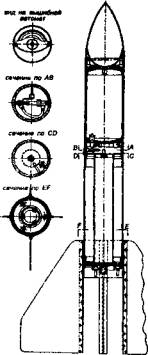
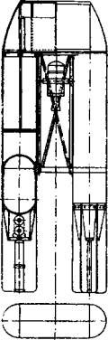
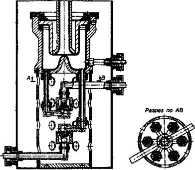
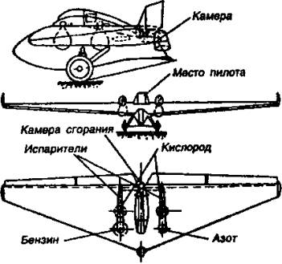

Растерзанный РНИИ
У нас тоже дела шли с переменным успехом. С одной стороны, советская власть всячески обласкивала некоторых деятелей космонавтики — в ноябре 1921 года Совет Народных Комиссаров, например, установил пожизненную и вполне приличную пенсию с пайком для К. Э. Циолковского. С другой стороны, когда ракетчики вышли уже на стадию практических испытаний своих творений, многие из них оказались в лагерях, а то и под расстрелом.
Вот как это было…
ПОЛЕТЫ НА БУМАГЕ. Итак, в мае 1924 года у нас, как и у немцев, было организовано свое Общество изучения межпланетных сообщений. Его члены тут же принялись пропагандировать идеи космонавтики, собирать наиболее интересные разработки по стране. В итоге весной 1927 года в Москве состоялось открытие первой в истории СССР «Выставки моделей и механизмов межпланетных аппаратов».
Интерес правительства к космонавтике не остался не замеченным за рубежом. Все сообщения из Страны Советов, касавшиеся космоса и освоения межпланетного пространства, рассматривались, что называется, под лупой.
Не обходилось, как водится, и без преувеличений. Так, в английской печати появилось вдруг сообщение о том, что «одиннадцать советских ученых в специальной ракете вылетают на Луну». Основой для такого сообщения, очевидно, стала заметка, опубликованная в нашей печати:
«На московском аэродроме заканчивается постройка снаряда для межпланетного путешествия. Снаряд имеет сигарообразную форму, длиной 107 метров. Оболочка сделана из огнеупорного легковесного сплава. Внутри — каюта с резервуарами сжатого воздуха. Тут же помещается особый очиститель испорченного воздуха. Хвост снаряда начинен взрывчатой смесью. Полет будет совершен по принципу ракеты: сила действия равна силе противодействия. Попав в среду притяжения Луны, ракета будет приближаться к ней с ужасной скоростью, и для того, чтобы уменьшить ее, путешественники будут делать небольшие взрывы в передней части ракеты».
В связи с таким ажиотажем в Общество изучения межпланетных путешествий приходили мешки писем с просьбой записать в отряд, как тогда говорили, межпланетчиков.
ТИХОМИРОВ И ГДЛ. На самом же деле о создании межпланетных кораблей было говорить, конечно, еще очень рано. Только-только группы энтузиастов начинали разрабатывать первые ракетные двигатели.
Одна из таких разработок велась в Газодинамической лаборатории, больше известной как ГДЛ. В ее основу были положены работы инженера-химика Николая Ивановича Тихомирова, занимавшегося в Москве, в доме № 3 по Тихвинской улице, химическими и пиротехническими экспериментами. Тут же была и слесарно-механическая мастерская.
Сам Тихомиров занимался ракетами еще с 1894 года. И в начале XX века он предложил Морскому министерству проект боевой ракеты, причем в двух вариантах — на твердом порохе и жидкой смеси спиртов и нефтепродуктов.
Экспертиза его разработок затянулась. Сначала помешала Первая мировая война, потом — революция.
Но Тихомиров оказался человеком упорным и в мае 1919 года сделал аналогичное предложение уже управляющему делами Совнаркома Владимиру Бонч-Бруевичу. Новая власть тоже не очень торопилась с экспертизой, но все же в 1921 году проект «самодвижущейся мины для воды и воздуха» был признан имеющим важное государственное значение.

Ракета ГДЛ.
Тихомиров получил какие-то деньги и смог отказаться от ранее применявшегося в ракетах черного дымного пороха. На смену ему пришел стабильно горящий бездымный пироксилиновый порох.
В 1925 году Гидродинамическую лабораторию, набиравшую все больше сотрудников, перебазировали в Ленинград.
РУБЕЖ — 100 КИЛОМЕТРОВ. В 1929 году в ГДЛ был организован новый отдел, руководителем которого стал В. П. Глушко. Он стал заниматься разработкой жидкостных реактивных двигателей и создал их более полусотни — от ОРМ-1 по ОРМ-52. Кстати, ОРМ — это аббревиатура слов «Опытный ракетный мотор».
Все разработки отдела Глушко перечислить здесь невозможно — получилась бы отдельная книга. А потому скажем коротко. Как и у других ракетчиков, двигатели Глушко получались поначалу довольно капризными. Тем более что он с самого начала стал работать с довольно необычными смесями — четырехокисью азота (в качестве окислителя) и толуолом.
Взрывы и отказы следовали один за другим, однако со временем разработчики накапливали опыт, и к началу 30-х годов двигатели стали работать более-менее устойчиво. Так, скажем, в 1931–1932 годах на двигателе ОРМ-16 группа Глушко провела более 100 огневых стендовых испытаний.
А к 1933 году отдел Глушко пришел с наиболее мощным в то время ЖРД ОРМ-52, который развивал тягу до 300 кг и имел скорость истечения газовой струи 2060 / . Двигатель работал на смеси азотной кислоты и керосина и весил всего 14,5 кг.
Однако В. П. Глушко не успокоился и на этом. Он поставил перед собой цель: ракета с его двигателем должна первой одолеть рубеж высоты в 100 км. Для этого он предложил проект PЛA-100 («Реактивный летательный аппарат с высотой подъема 100 километров»).

Ракета «РЛА-100», спроектированная в ГДЛ.
Согласно расчетам, стартовый вес этой ракеты должен был составлять 400 кг, из них на топливо с окислителем приходилось 250 кг. Для успешного полета требовалось довести тягу двигателя до 3000 кг, и Глушко со своим отделом снова с головой ушел в работу.
Впрочем, проект PЛA-100 в те годы так и остался мечтой. На летные испытания удалось вывести лишь экспериментальные ракеты PЛA-1, PЛA-2 и РЛА-3, способные осуществить вертикальный взлет на высоту порядка 4 км.
Правда, Глушко тем временем придумал ЭРД — электрический ракетный двигатель. Принцип действия такого двигателя был довольно прост: в камеру сгорания подается электропроводящее вещество, через которое проводится мощнейший электрический разряд. При этом вещество или рабочее тело мгновенно испаряется и под большим давлением выбрасывается через сопло наружу, создавая тягу.
Идея показалась многим интересной. Над ее осуществлением много экспериментировали, но довести ее до реализации смогли лишь много десятилетий спустя — в 70-е годы XX века. Теперь электроракетные двигатели все больше начинают использоваться в качестве маневровых на аппаратах, работающих на орбите и в межпланетном пространстве. Но создать «Гелиоракетоплан», как предлагал Глушко, пока никому не удалось. Слишком мала тяга такого двигателя.
ТЕМ ВРЕМЕНЕМ В ГИРДЕ… Параллельно с Газодинамической лабораторией над проблемой создания ракет и двигателей для них трудились в общественных группах изучения реактивного движения, известных под названиями МосГИРД и ЛенГИРД. Они были организованы осенью 1931 года по инициативе уже известного нам Фридриха Цандера.
В то время он всерьез работал над проектом ракетоплана РП-1. Его основу составлял бесхвостый планер БИЧ-11, на который планировалось установить ракетный двигатель ОР-2.
Поскольку самодеятельным энтузиазмом тут уж было обойтись нельзя, для работы над ракетопланом обе группы ГИРДа были слиты воедино под эгидой Бюро воздушной техники Центрального совета Осоавиахима. У руля новой организации стал сам Ф. А. Цандер, а Технический совет ГИРДа возглавил молодой талантливый инженер — Сергей Королев. Другие руководящие посты достались также конструктору планера БИЧ-11 Борису Черановскому, известному аэродинамику Владимиру Ветчинкину и авиационному инженеру Михаилу Тихонравову.
Бесхвостый планер был выбран специально — реактивная струя не могла спалить хвост.
Согласно проекту, ракетоплан РП-1 («Имени XIV годовщины Октября») должен был иметь следующие характеристики: стартовый вес — 470 кг, длина — 3,2 м, размах крыла — 12,5 м, максимальная скорость — 140 км/ч.

Схема двигателя ОРМ-1.
Сергей Королев сам выполнял все полетные испытания планера, намереваясь довести продолжительность полета с работающим двигателем до 7 минут. Однако работы над двигателем все затягивались. Первые испытания состоялись лишь 18 марта 1933 года, но в ходе их двигатель взорвался, а сам испытательный стенд был полностью разрушен.
Затем в течение 1933 года было проведено еще три испытания двигателя, но он продолжал вести себя капризно. Максимальная продолжительность работы составила всего 35 секунд. И в конце концов гирдовцы были вынуждены отказаться от идеи создания ракетоплана.
УСПЕХИ ТИХОНРАВОВА. Теперь основное внимание сместилось на работу бригады, возглавляемой М. К. Тихонравовым. Здесь занимались в основном ракетами на жидком топливе.
Наиболее успешно продвигались работы по ракете ГИРД-09, работавшей на смеси жидкого кислорода и сгущенного бензина. Полностью снаряженная ракета весила 19 кг, причем треть массы приходилась на топливо.
Первые испытания двигателя ракеты ГИРД-09 состоялись на Нахабинском полигоне 8 июля 1933 года. Состоялось два запуска. Причем если при первом пуске двигатель развил тягу в 28 кг, то при втором на 10 кг больше. Оказалось, что во втором случае давление в камере сгорания было на 3 атмосферы выше.
Подняв давление еще, через месяц Тихонравов и его сотрудники достигли уровня тяги в 53 кг.
Запуск самой ракеты состоялся 17 августа 1933 года — канун Дня Воздушного флота, который гирдовцы, среди которых было много бывших авиаторов, тоже считали своим праздником.
Ракета взлетела на 400 м, а затем повернула к Земле. Причиной тому, как показал последующий анализ, послужило повреждение в соединении камеры сгорания с сопловой частью. Возникла боковая сила, которая и завалила ракету.
Тем не менее первый запуск сочли успешным — ракета все-таки взлетела — и тут же принялись готовить второй.
«Коллектив ГИРДа должен приложить все усилия для того, чтобы еще в этом году были достигнуты расчетные данные ракеты и она была сдана на эксплуатацию в Рабоче-Крестьянскую Красную Армию», — писал по этому поводу Сергей Королев в гирдовской стенгазете.
В общем, «птенчик еще не успел толком опериться», а его уже рядили в армейскую шинель.
Но, похоже, торопились напрасно. Вторая ракета, запущенная осенью 1933 года, взорвалась на высоте около 100 м. Почему это случилось, выяснить так и не удалось по причине полного разрушения аппарата.
Пришлось все же провести модернизацию двигателя. И новая ракета, получившая обозначение ГИРД-13, несмотря на свой «несчастливый» номер, совершила полдюжины полетов, достигнув высоты в 1500 м. Это был несомненный успех.
Успешные запуски, совершенные одной бригадой, побудили и остальных гирдовцев к более интенсивной работе. Одним из наиболее интересных проектов было создание ракетоплана, над которым начал работу еще Ф. А. Цандер.
Для отработки отдельных узлов будущего ракетоплана в реальных условиях решено было создать ракету ГИРД-Х, которая должна была иметь длину 2,2 м и стартовый вес — 29,5 кг. Ее двигатель работал на жидком кислороде и этиловом спирте и на стенде развивал тягу 70 кг.
Однако при первом пуске ракеты ГИРД-Х, который состоялся 25 ноября 1933 года, она достигла высоты всего 80 м. Для ракетоплана этого было маловато…

Ракетный планер «РП-1».
РОЖДЕНИЕ РНИИ. Тем временем в жизни отечественных ракетчиков произошло одно важное событие. Осенью 1933 года Газодинамическая лаборатория и МосГИРД объединились в единую организацию — Реактивный научно-исследовательский институт (РНИИ).
В результате произошли некоторая реорганизация и перестановка кадров. Начальником РНИИ стал Иван Терентьевич Клейменов, главным инженером — Георгий Эрихович Лангемак. Сергей Королев был назначен на должность заместителя начальника института. При этом он получил воинское звание дивизионного инженера.
Структура организации заметно стабилизировалась, теперь каждый четко знал свои обязанности. Это, как ни странно, привело к тому, что у того же Королева появилось больше свободного времени. И в 1934 году он написал и опубликовал свою первую серьезную работу — книгу «Ракетный полет в стратосфере».
В ней, в частности, он рассказывал о путях и достижениях мировой ракетной техники, подводил промежуточные итоги и намечал вехи на будущее. Королев также полагал, что в ближайшем будущем полет человека на ракете по ряду причин еще невозможен. Тем не менее ракета, пишет он, «благодаря своим исключительным качествам, т. е. скорости и большому потолку (а значит, и большой дальности полета), является очень серьезным оружием. И именно это надо особенно учесть всем интересующимся данной областью, а не беспочвенные пока фантазии о лунных перелетах и рекордах скорости несуществующих ракетных самолетов».
РАКЕТЫ С КРЫЛЬЯМИ. Тем не менее сам Королев вскорости начинает разработку серии крылатых ракет под индексом «06/1», «06/2» и так далее (в знаменателе назывался порядковый номер), которые, по сути, являлись моделями будущих ракетопланов. Они, как ни странно, понадобились прежде всего для того, чтобы привлечь внимание военных, увидевших в них средство для поражения различных целей как на земле, так и в воздухе.
Вообще надо сказать, что этот вид вооружения, считающийся ныне одним из самых грозных, имеет теперь достаточно длинную и довольно сложную, можно сказать, витиеватую историю развития. Крылатые ракеты все время балансировали между просто ракетами и ракетопланами или космическими самолетами, пока наконец не обрели своей «экологической ниши» и конструктивной законченности.
Между тем Королев еще в статье «Крылатые ракеты и применение их для полета человека» (1935 год) сразу дал довольно четкое определение: «Крылатая ракета-летательный аппарат, приводимый в движение двигателем прямой реакции и имеющий поверхности, развивающие при полете в воздухе подъемную силу».
Он имел полное преставление, о чем говорил, поскольку уже 5 мая 1934 года гирдовцами была испытана первая крылатая ракета серии «06/1», разработанная инженером Евгением Щетинковым. Она представляла собой гибрид модели бесхвостого планера с двигателем от ракеты «09». В общем, Королев и его коллеги снова попытались довести до ума ракетоплан.
Однако на испытаниях аппарат пролетел всего около 200 м, и стало понятно, что он нуждается в значительной модернизации. Следующая модель, по виду напоминавшая большую модель самолета с двухкилевым оперением, имела длину 2,3 м, а размах крыла — 3 м. Полетный вес ее доходил до 100 кг и проектная дальность оценивалась в 15 км.
Однако сразу же после старта модель описала мертвую петлю и на глазах своих создателей врезалась в землю.
В общем, более-менее нормально полетела лишь четвертая крылатая ракета — «06/4», впоследствии получившая другое обозначение — «212». Это была уже вполне серьезная конструкция длиной более 3 м и примерно с таким же размахом крыла. Полетный вес превышал 200 кг, из которых 30 кг отводилось на боевой заряд. Проектная дальность полета — 50 км.
Весной 1937 года изделие «212» представили на испытания, которые и прошли довольно успешно в течение 1937–1938 годов.
Наращивая успех, создатели крылатых ракет, кроме изделия «212», которое по современной терминологии можно отнести к классу «земля-земля», вскоре представили еще крылатые ракеты с индексами «201» и «217». Первая из них была класса «воздух-земля» и предназначалась для подвески на самолеты. Вторая же — ракета «217», — напротив, была класса «земля-воздух», т. е. предназначалась для поражения воздушных целей.
Интересно, что ракета «201» (или «301») уже в то время была радиоуправляемой. Аппаратура управления была создана командой под руководством профессора Шорина.
Правда, на практике полностью проверить весь набор команд — «вправо», «влево», «выше», «ниже», «взрыв» — оператор не смог: то рулевые машинки заедало, то сама команда не поспевала вовремя. В итоге достаточно надежно воспринималась лишь одна команда — на дистанционный подрыв боевой части.
Аналогичную систему удалось создать и для раскрытия в нужный момент парашюта для спасения ракеты. Королев остался очень этим доволен и впоследствии не раз использовал подобную схему для возвращения на землю геофизических и прочих ракет научного назначения.
Зенитную ракету проекта «217» тоже попытались наводить на цель с помощью телемеханической аппаратуры, разработанной при участии Центральной лаборатории проводной связи (впоследствии — Ленинградский филиал Государственного института телемеханики и связи). Работы эти были согласованы с ВВС и Управлением связи РККА.
Причем в ходе работ над зенитной ракетой у сотрудников РНИИ возникла мысль создать не двукрылую, как самолет, ракету, а четырехкрылую, поскольку в ходе полета такая схема отличалась большей маневренностью.
Таким образом, еще за два года до начала Второй мировой войны в нашей стране были созданы первые образцы довольно совершенного по тем временам ракетного оружия.
К сожалению, только поставить их производство на поток не удалось. Но в том уж сотрудники РНИИ меньше всего виноваты. Ведь многие из них вскорости оказались в лагерях, а сама их организация, по существу, разгромлена.
МЕЧТА О ПИЛОТИРУЕМОМ ПОЛЕТЕ. Пока, впрочем, дела обстояли не так уж плохо. Эксперименты с моделями крылатых ракет убедили Королева и его сподвижников, что они теперь знают, как можно спроектировать и управляемый ракетоплан с человеком на борту.
Во всяком случае, именно этой теме был посвящен обстоятельный доклад Сергея Королева на 1-й Всесоюзной конференции по применению ракетных аппаратов для исследования стратосферы, состоявшейся 2 марта 1935 года в ЦДКА имени Фрунзе.
Такой ракетоплан в то время представлялся Сергею Павловичу похожим на самолет с длинным фюзеляжем, чтобы в нем разместились двигатель, баки с горючим и окислителем, а также с небольшими крыльями, поскольку при высокой скорости движения большие плоскости уже не нужны.
Кабина пилота обязательно должна быть герметичной, ведь при полетах на большой высоте и с огромной скоростью человек никак не сможет дышать забортным воздухом.
Привел Королев в своем докладе и весовые характеристики конструкции. Общий вес аппарата, по его мнению, должен быть около 2000 кг. Удельное распределение массы должно быть примерно таким: летчик в скафандре вместе с системой жизнеобеспечения — 5,5 %, двигатель — 2,5 %, аккумулятор давления — 10 %, баки — 10 %, сама конструкция — 22 %. Все остальное приходилось на топливо и окислитель.
Сама схема полета представлялась такой. Аппарат подобно самолету разгоняется по земле и взлетает с помощью отбрасываемых пороховых ускорителей. Затем начинает набор высоты под углом 60 градусов на собственном двигателе. После выработки всего топлива ракета переводится в вертикальный полет и по инерции достигает высоты 32 км. С этой высоты она пикирует на скорости 600–700 м/с, а затем приземляется, используя подъемную силу крыльев.
Еще один вариант достижения больших высот С. П. Королев предлагал достичь с помощью комбинированных схем. «Большая ракета, — пояснял он, — несет на себе меньшую до высоты, скажем, 5000 метров. Далее эта ракета поднимает еще более меньшую на высоту 12 000 метров, и, наконец, эта третья ракета или четвертая по счету уже свободно летит на несколько десятков километров вверх».
Выдвинул он и другое предложение: «Возможно, будет выгодным подниматься вверх без крыльев, а для спуска и горизонтального полета выпускать из корпуса ракеты плоскости, которые развивали бы подъемную силу».
Причем «осуществление первого ракетоплана-лаборатории для постановки ряда научных исследований в настоящее время хотя и трудная, но возможная и необходимая задача, стоящая перед советскими ракетчиками уже в текущем году», заключил оратор свое выступление.
А на календаре, напомним, значился всего лишь 1935 год.
Однако Королев не привык откладывать намеченное в долгий ящик. И вскорости действительно начал работать над проектом ракетоплана. Ему помогали такие же энтузиасты, как и он сам, согласившиеся работать сверхурочно. В итоге всего за два месяца эта самодеятельная бригада представила проект двухместного «планерлета» СК-9 — прототипа будущего ракетоплана.
На СК-9 проектировщики собирались проверить правильность некоторых своих решений, ведь компьютерного моделирования в ту пору не существовало. И даже аэродинамические продувки были редкостью.
Вскоре планер изготовили на заводе Осоавиахима. Он прошел все стадии облета и даже совершил дальний перелет за буксировщиком из Москвы в Коктебель, показав неплохие результаты.
Конструкция была выполнена из дерева, только рули и хвостовая часть фюзеляжа частично обшивались тонкой листовой нержавеющей сталью. Оставалось оснастить СК-9 двигателем и посмотреть, как он поведет себя в самостоятельном полете.
Слухи о первом успехе этой внеплановой работы по созданию проекта высотного ракетоплана-лаборатории стали известны начальнику РНИИ Ивану Клейменову, и в конце 1935 года он разрешил включить ее в перспективный план института.
Теперь дела пошли еще быстрее. Уже 2 февраля 1936 года Королев вместе с инженером Евгением Щетинковым вынес на обсуждение руководства РНИИ эскизный проект будущего ракетоплана, получившего обозначение РП-218 (отдел № 2, тема № 18).
В объяснительной записке приводились следующие данные: «Ракетоплан должен нести следующую нагрузку: а) экипаж — 2 человека с парашютами — 160 кг, б) скафандры с кислородными аппаратами — 2 шт. — 40 кг, всего — 200 кг».
Наибольшая высота полета предполагалась в 25 км; максимальная скорость — до 300 м/сек.
Сам взлет ракетоплана предполагалось осуществлять, либо прицепив его к тяжелому самолету-носителю, способному подняться на высоту 8-10 км, либо на буксире за ним, либо непосредственно с земли с помощью стартовых пороховых ускорителей.
И сама конструкция ракетоплана рассматривалась в нескольких вариантах, пока в конце концов конструкторы не пришли к такой концепции: стартовый вес аппарата 1600 кг, скорость — 850 км/ч, потолок — 9 км. Разгон должны были осуществить три азотно-кислотно-керосиновых двигателя ОРМ-65 конструкции В. Глушко.
Как видите, в ходе работы в зависимости от получаемых результатов менялся и сам первоначальный замысел. Королев менял и саму конструкцию и сферу применения аппарата.
На первый план постепенно была выдвинута идея использования подобных летательных аппаратов в качестве истребителей-перехватчиков, способных догнать самый скоростной бомбардировщик.
Сам Королев в феврале 1938 года в докладе о развитии исследовательских работ по ракетному самолету, подготовленном совместно с Щетинковым, писал об этом так. Поскольку разница «в максимальных скоростях современных бомбардировщиков и истребителей настолько мала, что преследование бомбардировщика после маневра практически нецелесообразно, так как за время преследования бомбардировщик успевает пройти десятки и сотни километров», появилась необходимость постройки истребителя, обладающего очень большой скоростью и особенно скороподъемностью.
«Запас топлива такого истребителя должен обеспечить продолжительность боя в течение 4-5 мин и дальность полета в пределах зоны тактической внезапности (т. е. 80-120 км). Ракетный истребитель может удовлетворить этим требованиям», — подчеркивает Королев. И в том же докладе представил эскизные проекты четырех новых вариантов экспериментального ракетного самолета.
Однако ни по одному из вариантов работы так и не были доведены до конца. Волна репрессий, набиравшая силу в стране, докатилась и до ракетчиков.
И ТУТ ГРЯНУЛА ГРОЗА… Сначала в 1937 году был арестован и расстрелян «высокий покровитель» ГИРДа и РНИИ, маршал Михаил Тухачевский. Вскоре после него погибли в застенках начальник РНИИ Иван Клейменов и главный инженер РНИИ Георгий Лангемак. В марте 1938 года арестовали конструктора двигателей Валентина Глушко. Летом того же года попал в руки чекистов и Сергей Королев.
Обвинение было стандартным. Ему велели сознаться в том, что он «состоял членом антисоветской подпольной контрреволюционной организации и проводил вредительскую политику в области ракетной техники». Далее обвинение конкретизировалось: Королеву, в частности, поставили в вину, что он разрабатывал твердотопливную ракету «217» лишь с целью задержать развитие более важных направлений; что он сознательно препятствовал созданию эффективной системы питания для бортового автопилота ракеты «212»; что он разрабатывал заведомо негодные двигатели.
В результате через три месяца после ареста Военная коллегия Верховного суда СССР под председательством Ульриха приговорила конструктора к 10 годам тюремного заключения с поражением в правах на пять лет и конфискацией личного имущества.
Правда, работы по вариантам ракетного самолета после этого не остановились. Ведущим конструктором по «РП-318-1» после ареста Королева был назначен инженер Щербаков. Ведущим конструктором по двигательной установке стал инженер Арвид Папло.
На ракетоплан установили азотно-кислотно-керосиновый двигатель РДА-1-150 конструкции Леонида Душкина. И в феврале 1939 года начались наземные испытания двигательной установки РДА-1-150, в ходе которых было проведено свыше 100 пусков.
Тем временем летчик-испытатель Владимир Федоров, которому поручалось пилотирование этой необычной машины, осваивал приемы пуска и управления двигателем.
В январе 1940 года ракетоплан привезли на один из подмосковных аэродромов. Здесь провели последние испытания ЖРД прямо на планере. Специальная комиссия представителей промышленности и научно-исследовательских учреждений признала возможным допустить машину к полету.
И вот 28 февраля 1940 года самолет-буксировщик Р-5 несколько раз прорулил по взлетному полю, утрамбовывая взлетную дорожку в снегу. Федоров занял место в кабине ракетоплана. В 17 часов 28 минут самолет-буксировщик пошел на взлет.
На высоте 2800 м ракетоплан РП-318-1 отцепился от буксировщика, и Федоров включил ракетный двигатель. Наблюдавшие за полетом видели, как за ракетопланом появилось сначала серое облачко от зажигательной шашки, а затем пошел бурый дым. Двигатель заработал на пусковом режиме. Наконец показалась огненная струя длиной около метра. Ракетоплан стал быстро набирать скорость и перешел в полет с набором высоты.
«Нарастание скорости от работающего РД и использование ее для набора высоты у меня, как у летчика, оставило очень приятное ощущение, — писал потом Федоров в своем отчете. — После выключения спуск происходил нормально. Во время спуска был произведен ряд глубоких спиралей, боевых разворотов на скоростях от 100 до 165 км/ч. Расчет и посадка — нормальные».
В марте 1940 года состоялось еще два успешных полета. Они показали, что, в принципе, ракетные двигатели в СССР достигли такого уровня, что их вполне можно было ставить на ракетопланы, осваивать серийный выпуск таких машин.
Но это в теории. На практике же все получилось совсем иначе…